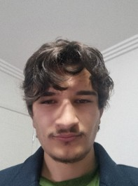
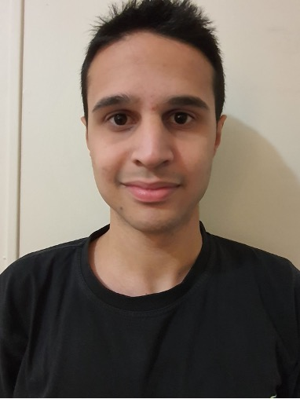

Personal infomation
Ariyan Aghdassi info:

My name is Ariyan Aghdassi, and I am currently studying a Bachelor of Information Technology at RMIT. I was given the student number s3895258 which correlates to my student email s3895258@student.rmit.edu.au one and a half years ago. This is due to the fact that I originally completed both a Diploma of Surveying and an Advanced Diploma of Surveying. While deciding whether to resume Surveying as a career and enter the Bachelor of Applied Science (Surveying), I came to the tough decision to change my future and decided to go into Bachelor of IT. My interest in IT definitely started with gaming when I first played Tekken 3 on a PlayStation One, ever since then I bought every PlayStation and even eventually expanded to other platforms such as Nintendo and PC. I was introduced to gaming by my brother who owned the PlayStation One at the time, he also showed me how to use a lot of technological devices such as cameras and phones. However, since building the PC that I mentioned before, my interest in IT really expanded and felt quite an accomplishment after. I started moving towards IT over surveying as I enjoyed the aspects of IT much more. While surveying deals with technology and programs such as AutoCAD, it is very hands on compared to jobs in IT. After taking the Myers-Briggs test and receiving the personality type commander, I have learnt quite a lot about myself. According to the test most of my personality is very even, most shockingly that I am more extraverted than introverted. This is very different to what I thought as I believe I am quite a shy person, however after seeing this result, my social life makes more sense. This is a link to my github for more about me: More about me
James Watson info:
My name is James Watson, S3955201, s3955201@student.rmit.edu.au, I come from sydney. I recently moved to melbourne after finishing highschool and have lived there since birth. My main language is English and I am non religious. My favourite hobby is either playing tennis when I am outside or playing computer games inside. When I was 4 I got my first PC which was a laptop and have loved using technology since then. In highschool one of the first electives that i picked was IT in year 9 and 10, then in year 11 and 12 i picked SDD (software design and development), i also wanted IPT (information process technology) however only one of these could run at the time and SDD had the majority pick. My interest in IT has come from gaming, the use of computers when i was younger, my dad, and liking to code. I chose to come to RMIT because my dad had work down in Melbourne and the offers from Sydney were very slow, the first offers handed to me were RMIT before any other university. My IT experiences include: Python for 3 years, C# for a year, and a bit of Lua roughly half a year (still learning). In my studies I expect to learn some new languages relating to web development and coding, possibly more teamwork, and expand my skills for going to a job. This is a link to my github for more about me: More about me
Klarisa Arwena Anhar info:
Hi, Hello and Good day, my name is Klarisa Arwena Anhar, and I’m a student in RMIT, I’m 18 years old – born on 1st of April 2004 – and I’m pursuing a degree in Information Technology, I graduated from high school not too long ago, so my educational background is limited (though I look forward to learning many new things during university). Also, I’m from Indonesia, but I’m hoping to get Australian citizenship one day.I’m around 163cm, or 5’4 if you use feet, I’m deathly allergic to cats, I owned a tiny pet spider once, and I’ve got a deep love for gaming, drawing, anime, and cooking shows! (and sometimes, the irl cooking)Although I don’t play games as often as I used to, I’m still very fond of life simulation and sandbox games, from games like Harvest Moon (very nostalgic, I had it on my PSP at age 5) to games like Minecraft (been playing from 2010) or Sims 4 and Spore. I prefer soothing games over violent ones, though I do commit a fair share of war crimes and murder in The Sims. I’ve taken the Myers-Briggs test a few times over the years, out of curiosity, and I’ve noticed that I’ve been quite consistent with my personality type; The Campaigner, or ENFP. This is a link to my github for more about me: More about me

Heng-Chia Chang info:
My name is Heng-Chia Chang (Isaac) whose student number is 3860650 and email address is s3860650@student.rmit.edu.au. I was born in Taiwan where Portuguese called “Formosa”, which means, a beautiful island. Stinky Tofu, Pearl Milk Tea and Pig Blood Cake are the most special and unique dishes in Taiwan. I love playing basketball and my favourite NBA team is the Los Angeles Lakers due to LeBron James. I have been his fan since I was 7. Semester 2 2022 is officially my first year in RMIT University and I am excited about the new chapter in RMIT in Australia. After completing the online Myers-Briggs test, I found that I am a logistician. The result is quite similar to my personality, for example, stubborn, honest and judgement etc. The result is kind of to value myself and to prove I am on the right track of my ideal career. By doing the Myers-Briggs test I have a deeper and more comprehensive understanding of myself and then I can strengthen my weaknesses or drawbacks. On the other hand, I get to know more about my advantages and to maintain them. Myers-Briggs test lets me have more time to adjust my habits to experience better in a group. This is a link to my github for more about me: More about me
Mitchell Groenewaldt info:

My name is Mitchell Groenewaldt, I was born in Australia at the Austin Hospital, my background is half Italian on my mother’s side, half South African on my dad’s side. My mum was born in Australia, whilst my dad was born in Cape Town, South Africa.In terms of culture, I usually follow the traditional Italian culture of spending lots of time with family such as my grandparents and cousins, we often catch up for a meal, commonly having something Italian, or even something light like a coffee or tea.Education that I have completed consists of Year 12 VCE, and Diploma of Information Technology at RMIT.One interesting fact about myself is I am a massive car enthusiast, I have been a major car fanatic ever since the age of 3, according to my parents, I could name any car, even rare cars like the Jaguar XJ220 (shown in the image below) without seeing the badge. My interest in IT started at the age of 4. My interest in IT mainly consists of working on computers such building PCs for not only myself but friends as well as meeting their requirements, performing maintenance such as repairs and troubleshooting, setting up routers which I had done in my Diploma of IT I enjoyed the physical aspect of hooking up routers and switches to each other, and if possible, to work on ECUs (Engine Control Unit) on cars, mainly perform ECU tuning, as ECU tuning is a very big element in the automotive industry, lots of high-end racing manufacturers such as Nissan Motorsports International (NISMO), Mugen Motorsports, Scuderia Ferrari, and many other companies (even locally) have a large demand in ECU tuners, as not many people have taken upon this role, so it combines my two favourite things, cars and IT. The Myers-Briggs results state that I am a Consul personality, meaning that I am a very supportive, social, and well-mannered person. This means to me that I have the skills and personality to work well with others, even in a team, I can either work as a team leader, or team supporter (helping the team achieve goals or resolve any issues). Also, I have discovered that this also means I am very supportive and can help others when they are in need.
Neil Mathew info:
My name is Neil Biju Mathew, and my student ID is s3961553. I can be contacted through my student email which is s3961553@student.rmit.edu.au. I was born in India and I hold an Indian passport but I have been studying in Australia since 2018. Along with English, I also speak Malayalam which is my mother tongue and mainly use it with my parents and family. I completed most of my secondary education in Australia and am currently studying Bachelor of IT at RMIT University. Along with studies I am working part time as a manager at one of the Hungry Jacks restaurants. Soccer and track events are my fav sport activities to get involved in and I am planning to get back into it by next season. Ever since I was a child, I have been really interested in anything that involves battery or any other electronic/electrical devices. Taking devices apart and messing around with it was something I enjoyed even though I never knew how to put it back together. My father being an IT professional is one of the main reasons towards my interest in technology, but it was not until recent years that I understood the specifics of IT and how it is used around the world.
Group Processes
During assignment 2, we started out with 7 people and we only ended up with 6, however even that didn’t really help. Unfortunately a lot of the group members left things till the last couple of days in which tasks that would have 4 people on it were completed by one person each. Both Ariyan and Isaac had to do extra tasks instead of just completing the ones they were assigned. Some members only did half a task each and left it for the last two days which created quite an issue as it delayed the website. One member did not do any tasks assigned. It's very annoying when things get left till the last moment. While there were assignments due the same week, a few of the members were able to deal with it fine and get all their tasks done on time, so other assignments cannot be a feasible excuse. Hopefully in this assignment (assignment 2), everyone has to do equal tasks ON TIME, otherwise the same issue will prevail and will be quite annoying to deal with again since it'll be much harder to manage compared to this time. Overall, the members who did the most, also got it done the earliest while the members who did the least finished it the last two days.
Additional paragraph placeholder if required.
Career Plans
<<<<<<< Updated upstream
The career plans of the majority of groups are the same from assignment 1 and assignment 2. This is due to the fact that while 9-10 weeks is enough time to wish to change careers, we are all new to IT and none of us have solidified our choices in terms of career. Therefore, as of now we all believe our IT career choice is what we will want to do for a few years to come and maybe then our decisions will change. For Ariyan, “I started off wanting to become a data analyst and while the database systems unit may change my mind, I am still determined to become a data analyst.” Whereas for James, “my thoughts haven’t changed since I joined this course. I have always wanted to achieve my end goal as a senior developer and throughout the current course has not swayed my opinion about what I want to do, more rather help me towards my end goal.” Next, For Isaac, “I haven't changed my mind since the first class. Information technology makes it easier to achieve my goal as being an IT manager. Being an IT manager requires a lot of coding skills and Information technology definitely helps me to get closer to it.” As for Mitchell, “I also haven't changed much in terms of goals, I still have a dream job of tuning car ECUs, however, I'd also still be very happy to be working physically in terms of IT, such as being an IT consultant or whatnot.” For Neil, “I haven't had any change of mind yet and I am still seeing security engineering manager as my ideal job until I find something that might change my mind in the future. The IT field of study also covers my interest so I believe this is the right path for me for now. “ Finally, for Klarisa, “after doing the second assignment research and watching hundreds of videos, I instead became much more intrigued by the world of Game Design and would like to know more about it, although still lacking in programming I'm sure I will improve one way or another.”
Member 1 info:
Insert member 1 career info here
Member 2 info:
Insert member 2 career info here
======= The career plans of the majority of groups are the same from assignment 1 and assignment 2. This is due to the fact that while 9-10 weeks is enough time to wish to change careers, we are all new to IT and none of us have solidified our choices in terms of career. Therefore, as of now we all believe our IT career choice is what we will want to do for a few years to come and maybe then our decisions will change.
>>>>>>> Stashed changes
For Ariyan, “I started off wanting to become a data analyst and while the database systems unit may change my mind, I am still determined to become a data analyst.”
Whereas for James, “my thoughts haven’t changed since I joined this course. I have always wanted to achieve my end goal as a senior developer and throughout the current course has not swayed my opinion about what I want to do, more rather help me towards my end goal.”
Next, For Isaac, “I haven't changed my mind since the first class. Information technology makes it easier to achieve my goal as being an IT manager. Being an IT manager requires a lot of coding skills and Information technology definitely helps me to get closer to it.”
As for Mitchell, “I also haven't changed much in terms of goals, I still have a dream job of tuning car ECUs, however, I'd also still be very happy to be working physically in terms of IT, such as being an IT consultant or whatnot.”
For Neil, “I haven't had any change of mind yet and I am still seeing security engineering manager as my ideal job until I find something that might change my mind in the future. The IT field of study also covers my interest so I believe this is the right path for me for now. “
Finally, for Klarisa, “after doing the second assignment research and watching hundreds of videos, I instead became much more intrigued by the world of Game Design and would like to know more about it, although still lacking in programming I'm sure I will improve one way or another.”